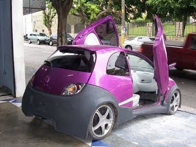
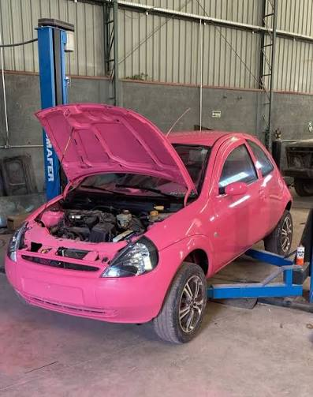

MEU KAZINHO
Desde pequeno sempre fui um grande fã de carros, sejam eles BMW's ou Ferraris. Porém um modelo específico sempre mexeu comigo.
Estou falando do elegante, potente e refinado:

FORDKA TUNADO
Porém o mesmo veio a me abandonar por volta desde ano. Desde então ando somente a pé, já que nenhum outro automóvel jamais tirará seu lugar.

CLICA AI PRA LER MEU RESUMO
CLICA AI PRA VER MEU CACHORRO